How to Summarize Information and Present it Visually
Visual Communication
March 2, 2018

So you have some content, maybe a blog article or a lengthy report, and you want to turn it into an infographic.
You know that visuals can make your content more engaging, more memorable, and easier to understand, but you have no idea where to start.
While it might be tempting to just copy and paste your text into a template right away, that rarely ends well. Too often I see people with no design experience try to shoehorn a ton of text into an infographic template that’s much too small!
To make an infographic that your audience will actually find useful, you need to know how to summarize content for this format.
To get you on your way, let’s walk through a case study. Together, we’ll review how to summarize a long-form article into a bite-sized, digestible infographic.
How to summarize long-form content for an infographic
We’ll be summarizing this article from the New York Times, with the aim of turning it into a single-page infographic fact sheet–an informational infographic that a parent could use as a handy reference if their child has the flu.
The original piece is a pretty typical informational article, packed with a lot of valuable information…but lacking in the visual department.
We can do better.
The goal is to cut the existing 1100 words down to around 200-300 words, maximum. Enough to give a quick, skimmable breakdown of the main points of the article without getting too wordy.
So, how do we cut an article down from 1100 words to less than 300?
1. Select the most important information
Start by reading through your text and identifying the essential ideas. Distinguish the bits of information that really matter from those that are less important.
To get this right, it’s critical to have a clear idea of what you want your audience to get out of the final product. This will help you define what information matters most.
For our article, our goal is to create something that parents can use as a reference to determine whether their child’s flu is particularly dangerous. It’s reasonable to assume that parents would want to know about the risk factors and symptoms they need to watch for if they have a sick child, and the potential treatments that the child might need.
With this in mind, we can go through the article and bold any information about risk factors, symptoms, or treatment (I’m only showing you the first page, but I’ve continued this process for the entirety of the article):
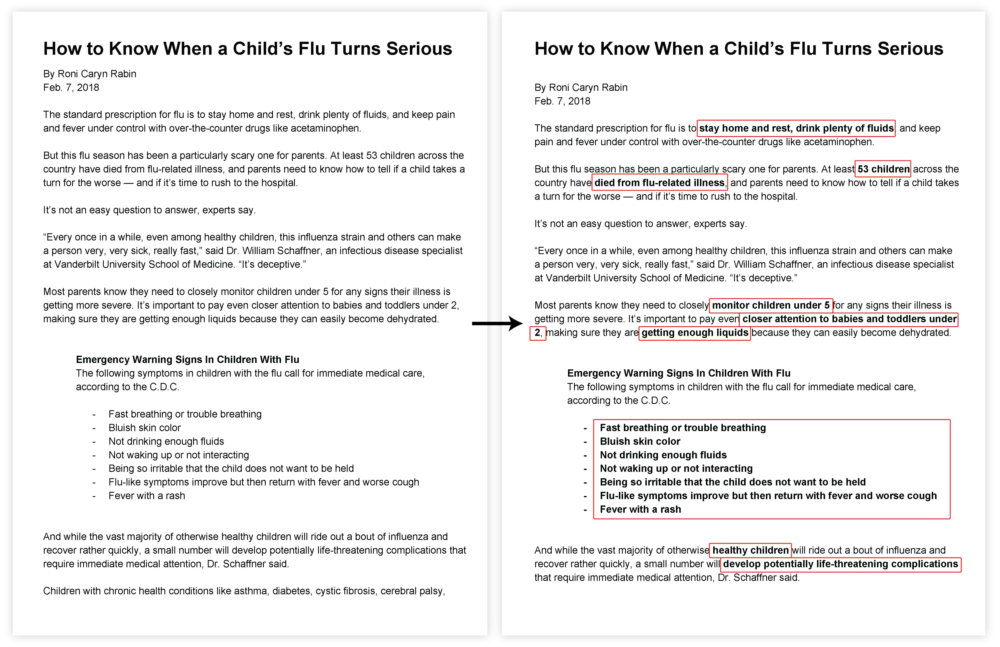
Key ideas established. Next we strike out any descriptive fluff.
Get rid of anything that doesn’t directly support that bolded information. We should remove about 80% of the copy at this stage:
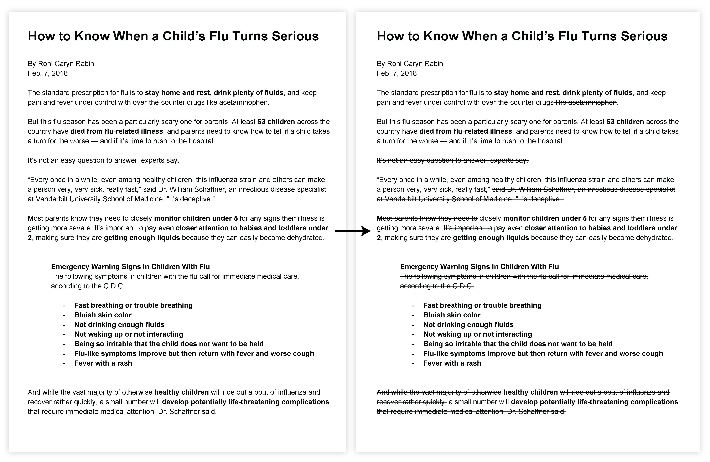
In these two simple steps, we’ve already cut our article down to less than 300 words.
2. Split up the information into logical parts
Now the volume of our text is quite manageable, but we’ve gotten rid of so much that it no longer flows logically from one idea to the next.
To structure it in a way that makes more sense, we need to first up our split up our text into stand-alone bullet points:
Now we can start organizing these bullet points in a way that will lends itself more nicely to an infographic.
Most infographics have 4 components:
- A heading
- An introduction
- A few section headings
- The main content of each section
Since the heading and introduction are best left till the end, our priority is to organize our copy into named sections.
We already know that we want highlight risk factors, symptoms, and treatments. These will become our section headings, so let’s split up our bullet points into those three sections:
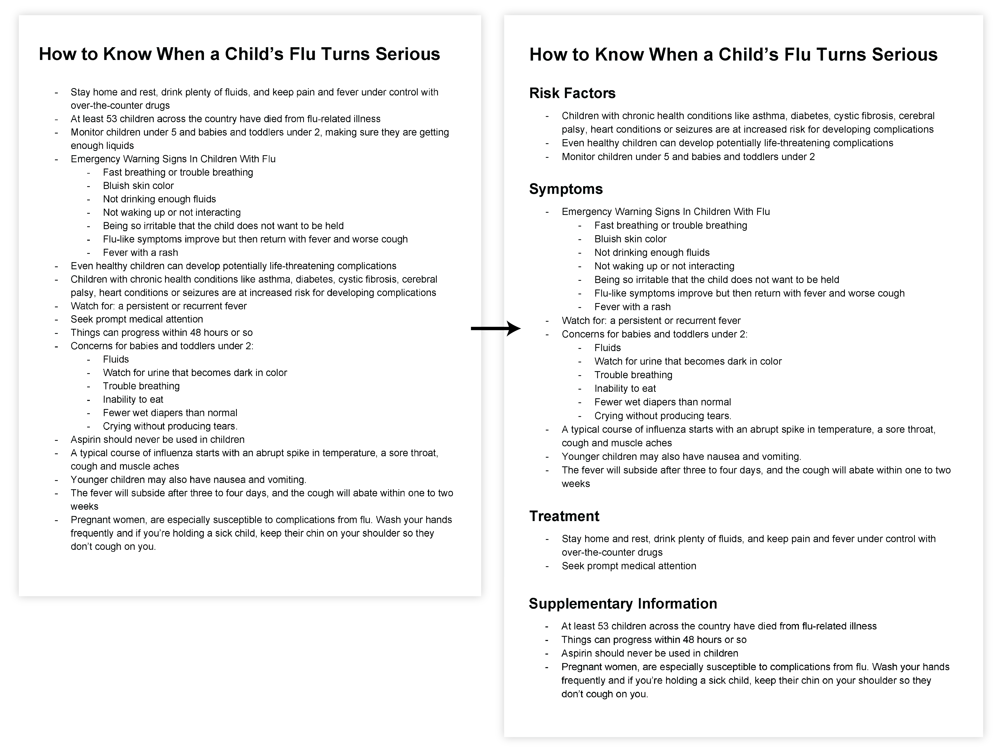
Any bullet points that don’t make sense in any of these three main sections can be used as supplementary information that we’ll later use to build an introduction, create section subheadings, or add as separate callouts.
3. Sequence the parts to tell a compelling story
At this point we know what our main sections will be, and exactly what information each section will contain. The final and most important step in creating a summary is all about connecting and sequencing that information so that it will immediately make sense to our audience.
This is where the magic happens.
At this stage, we need to ask ourselves a few questions about each bullet point:
1. How does this piece of information relate to other ideas in this section?
- Can I create any further groupings?
- Does it make sense as part of a list?
- Does it have an inherent order?
- Is it describing something? Could it be replaced with an image?
- It is particularly important? Should it be emphasized?
2. How does this section relate to the other sections?
- Would one section flow nicely into another? Is that flow unidirectional, bidirectional, or cyclic?
The aim of these questions is to a) understand the relationships within your copy and b) remove any redundancies within the text by identifying and grouping related elements.
The added bonus of grouping related elements? It introduces an extra layer of hierarchy, which can make the final product more skimmable.
Using this process to re-organize our summary, we end up with something much more structured:
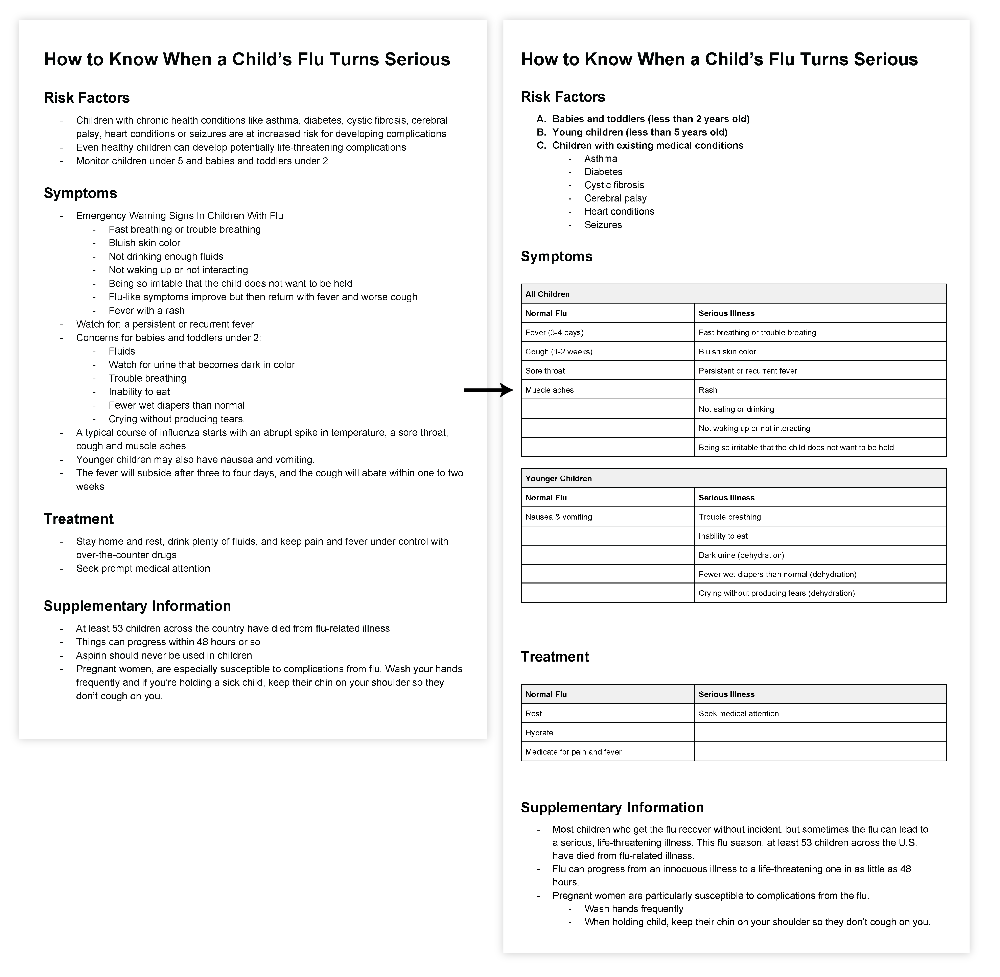
While it may look longer, we’ve actually removed even more copy and made the language much more straightforward.
You can see that we’re left with very few transition words, like “and”, “but”, “then”, or “or”. Words like these are usually used to connect related ideas, but our bullet points, tables, and information hierarchy render them unnecessary.
These structural elements are the perfect foundation on which to build an infographic.
All that’s left now is to turn the supplementary information into a few brief introductory sentences, tying everything together into one cohesive story. Let’s also rework our section headings so they better represent their section contents:
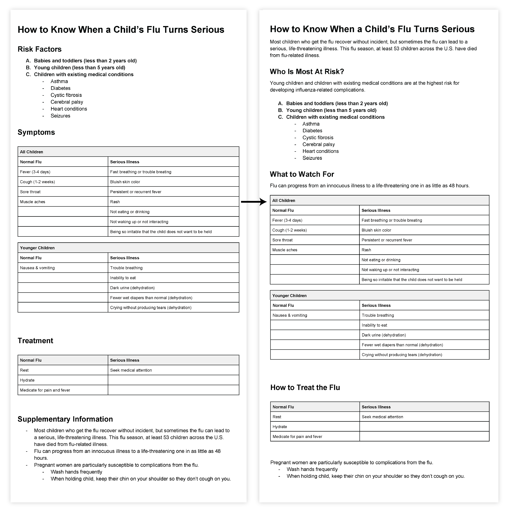
Notice that this completed summary has a very clear hierarchy of information. The main heading and section headings stand out, and tables concisely summarize relationships in larger sections. This hierarchy will translate beautifully into an infographic.
How to turn a written summary into a visual infographic
How do we go about turning this summary into an infographic? In order to make a design that complements our content, our content must drive the design.
Believe it or not, we’ve already tackled the hard stuff. We’ve combed through our copy, pulled out the most essential information, and organized it into a summary that makes sense and flows nicely.
Most importantly, we’ve identified how each piece of information relates to all of the others. To make an infographic, all we need to do is add graphic elements to reinforce and highlight those relationships.
This means keeping a few simple principles in mind when adding design elements. Each infographic design element should contribute to at least one of three things:
- Establishing visual hierarchy among elements
- Clarifying relationships among elements
- Drawing attention to a significant fact or detail
Let’s see how we can apply these principles to our summary in a few quick steps.
Step 1: Layout text elements in Venngage
The first step can sometimes feel like the hardest. Staring at that blank page on your screen, it’s natural to feel overwhelmed and give up.
That’s why I’ve made this first step as easy as pie: just put your text on the page!
Keep your text centered to start. Humans have a natural preference for symmetry, so it’s an easy way to make your design seem pleasing and complete.
Make sure you don’t lose any of that content hierarchy you developed when building your summary. Create that hierarchy by amping up the size and weight of your headings and leaving space between major sections. Bold keywords or statistics within blocks of text, and remember that headings at the same level should have the same styling:

It’s a good idea to do most of the design work in shades of grey before adding pops of color at the very end. A design that communicates well in greyscale will very likely be successful in color, and working without color makes the design process much simpler.
Step 2: Add design elements that clarify relationships among elements
With all of our text in place, it’s time to start adding some design elements. The priority is to add elements that will help viewers understand the content. Don’t worry about making anything flashy yet. There are a few easy strategies for making that happen.
Use shapes, borders, and repetition to group related elements
Every successful infographic uses basic shapes and outlines to indicate groupings. Enclosing related information within a shape immediately suggests to the viewer that information belongs together:
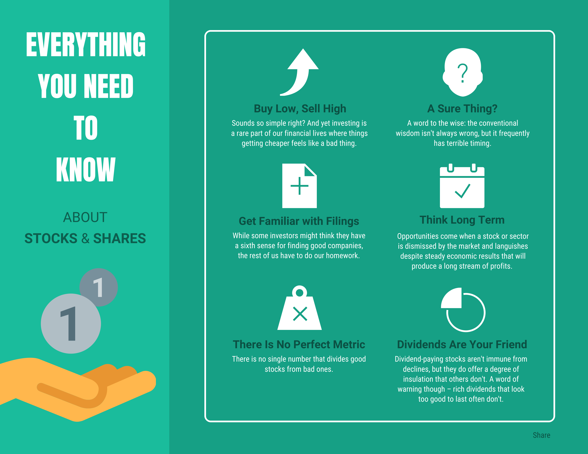
Alternatively, shapes and borders can be used to create clear distinctions between unrelated elements:
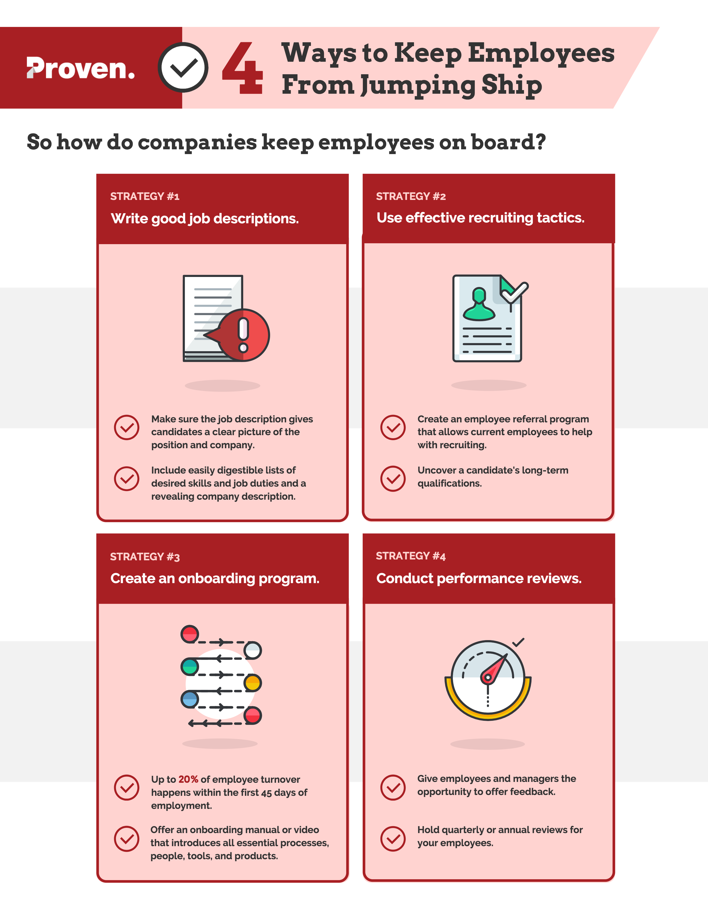
Many repeated, aligned shapes provide a satisfying sense of structure and rhythm:
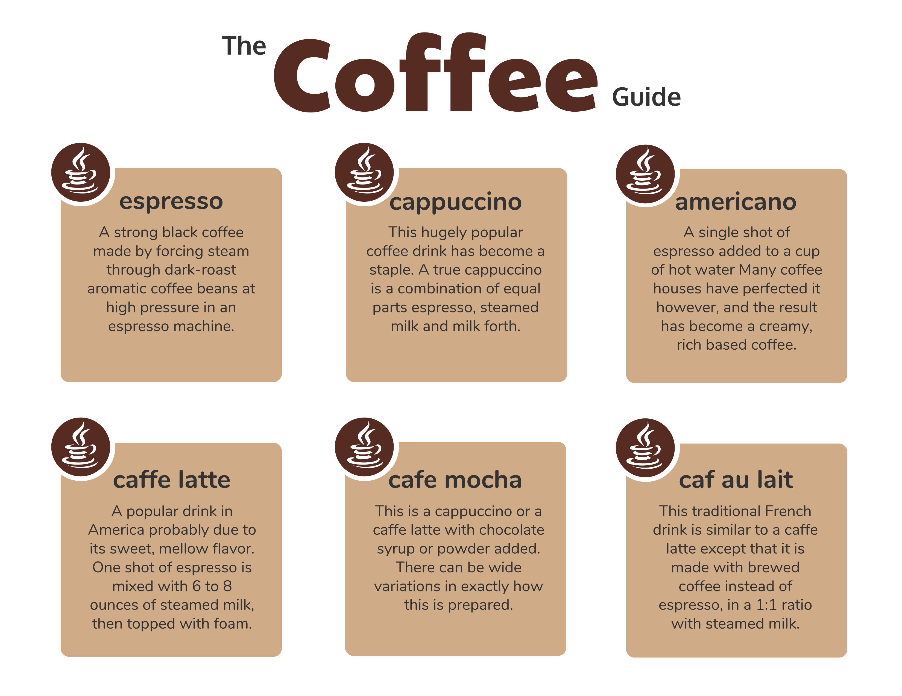
Use lines and arrows to connect elements
Lines can be used to associate elements or groups of elements:
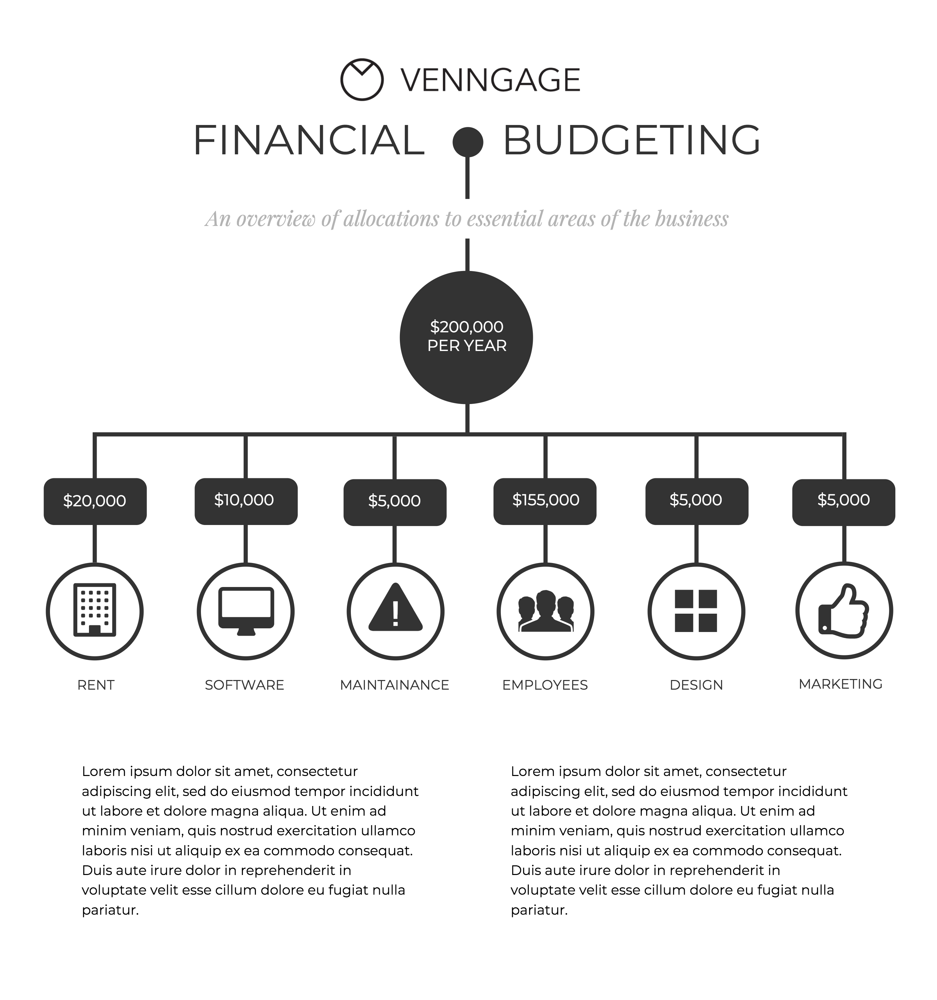
Similarly, arrows can tie elements together to suggest progression or highlight a particular reading order:
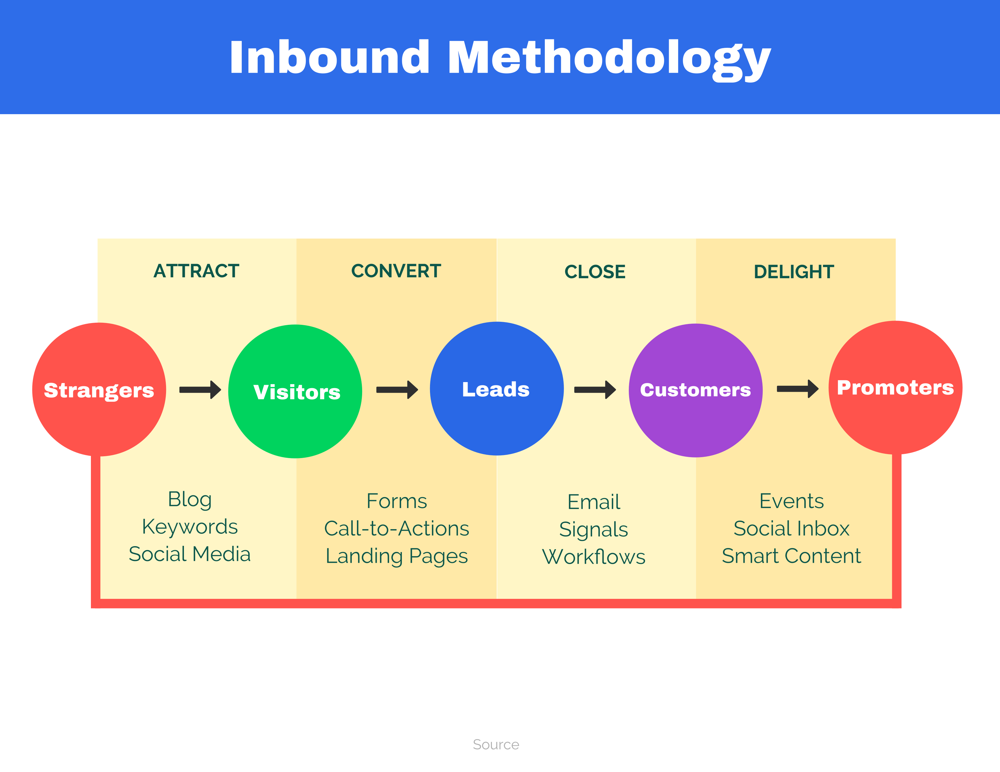
Let’s see how we can use shapes, lines, and arrows in our own infographic. Enclosing each section in a basic rectangle creates some essential order, and adding a subtle arrow to the title section directs the eye downwards into the graphic:
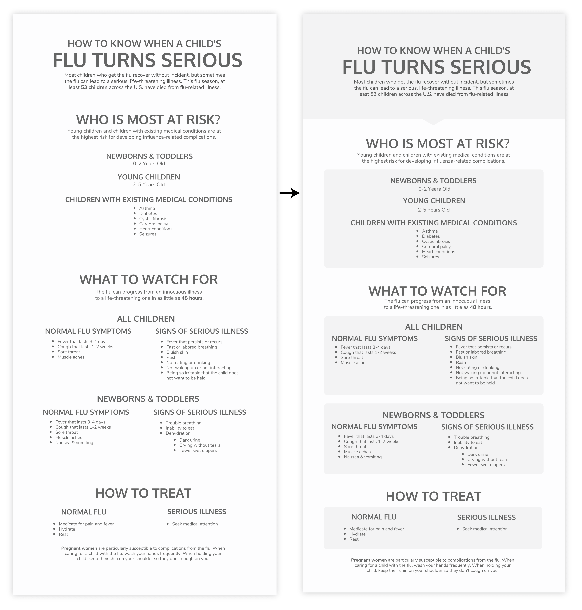
Using a timeline to represent age, we can tie together the elements in the top section, add some visual interest, and reduce our text to the bare minimum:
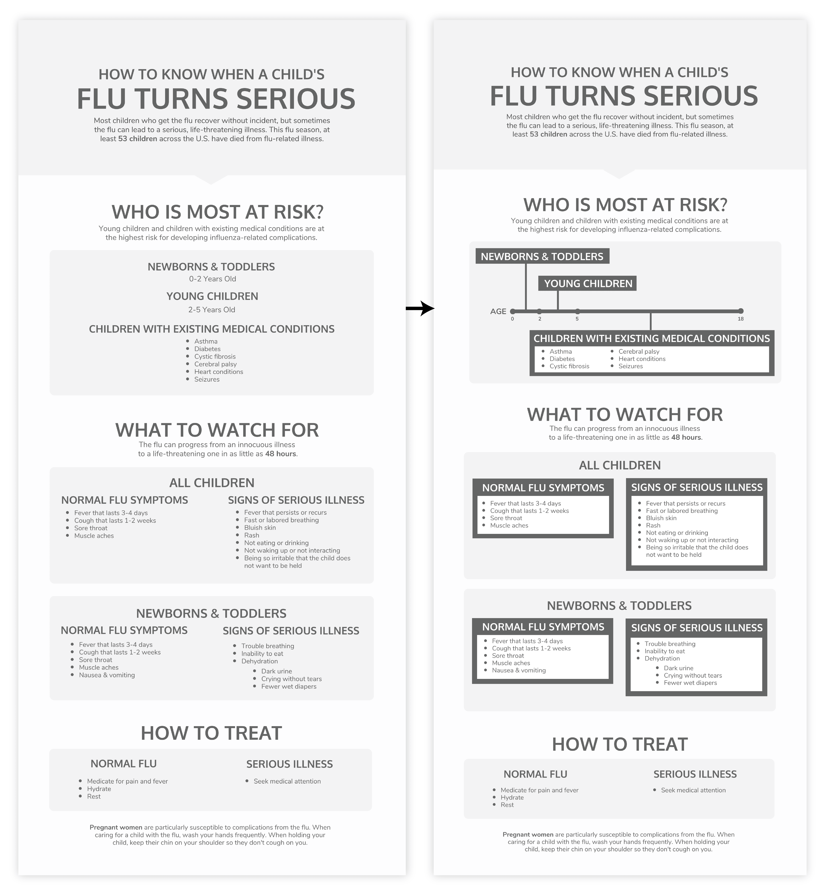
Carrying similar styling down into the next section creates repetition to provide some much needed structure.
Step 3: Add visual elements that draw attention to significant details
Now we’re getting somewhere.
Next we need to pull out key concepts and add supporting visuals in the form of icons, images, and symbols. The goal is to draw some extra attention to those essential details with the hope of making them more memorable and immediately apparent.
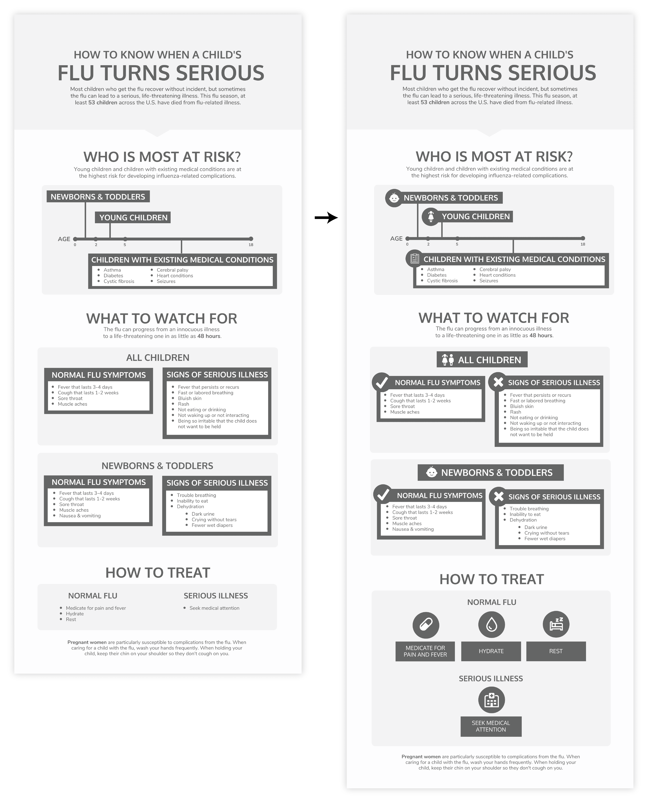
You’ll notice that for each icon I’ve added, I’ve also added a circular background. Repeating elements in this way helps pull everything together. Using a background on both the icon and its corresponding title also helps us see them as a unified whole instead of two disparate elements.
Step 4: Style and polish your infographic
Now our infographic structure is in place. Our final step is to add a little flair, finesse, and color.
First, let’s add some visual interest by varying the alignment of a few elements. We can make the subheadings in the “What to Watch For” section stand out by pulling them out to the left, and make the supplementary information more of a feature by pulling it out to the right:

Next let’s tackle the fonts. Fonts have a huge impact on how your infographic is perceived–they set the mood of the piece and dictate the ease at which your infographic will be read.
It’s usually a good idea to limit yourself to a maximum of 2-3 fonts per infographic. Use one highly readable font for the main body text, and 1-2 more stylized fonts for headers and subheaders:
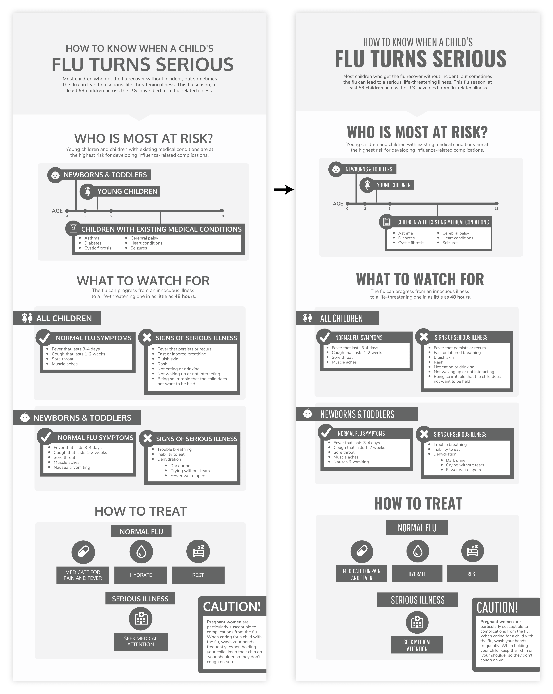
Time for some color, which can be used to make important information salient, reinforce visual hierarchy, create contrast, and add visual interest. Just like the rest of our design elements, colors should not be applied at random.
In our infographic, our main goal should be to communicate the distinction between the normal flu and signs of a serious illness. With that in mind, we can use a high-contrast color scheme to distinguish between those opposing categories and really draw attention to those main takeaways:
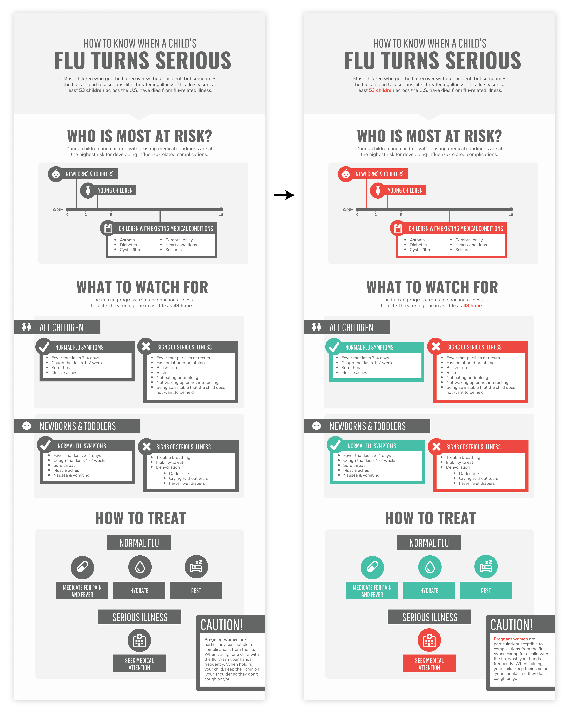
While any high-contrast color scheme would do, the red-blue color scheme is particularly fitting for our healthcare-related content.
Finally, all that’s left is a little extra polishing. I’ll underline my header for extra emphasis and shift some things around to ensure I’m making the most of my page:
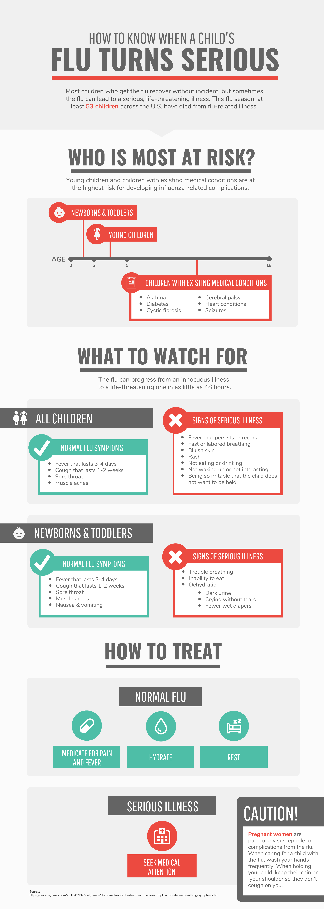
Everything in this final polish and style step should back up that basic structure we established earlier. Our fonts and colors should help reinforce those relationships and hierarchies, connecting similar elements and creating contrast between unrelated elements.
Always do a final check to make sure you’ve used your graphic elements consistently. Things should be spaced evenly, aligned (vertically and horizontally), and styled the same throughout.
Conclusion
The best infographics don’t just cobble together some disparate copy, add charts, and pepper in some icons for good measure. They tell a cohesive, compelling story.
As a beginner, you should focus on summarizing your copy to tell that single story. Give your reader some clear headings and subheadings work with, use a few sentences to introduce the topic, and then do your best to enhance that information visually.
This article was originally published by me on Venngage's blog.